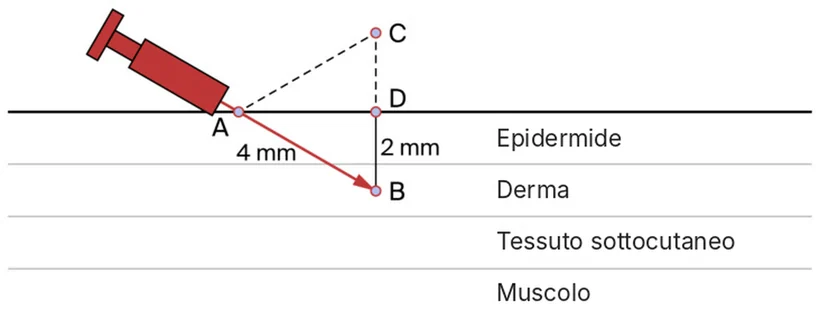

La mesoterapia consiste nel depositare piccolissime quantità di farmaco appena sotto la pelle, nel punto esatto in cui fa male, con aghi molto sottili e punture ravvicinate.
Il principio è semplice: concentrare il farmaco dove serve e ridurre la quantità che circola nel resto dell'organismo. È un trattamento di supporto al dolore localizzato, non una cura della causa.

Quando si propone
Si usa nel dolore muscolo-scheletrico localizzato e superficiale, quello che si può indicare con un dito: dolore cervicale, mal di schiena, artrosi del ginocchio, dolore nella zona della zampa d'oca, contratture muscolari.[1][3]
L'indicazione più convincente riguarda chi non può assumere antinfiammatori per bocca — per problemi di stomaco, di reni o per interazioni con altri farmaci — e ha un dolore ben circoscritto: la via intradermica permette di usare dosi molto più basse.[2]
Com'è la seduta
Si usa un ago molto corto, di pochi millimetri, inclinato rispetto alla pelle. In ogni punto si inietta poco più di una goccia, e i punti vengono distribuiti a distanza di uno-tre centimetri sulla zona dolente. La profondità è di circa due millimetri: il farmaco resta nel derma e passa lentamente nel sangue.[2]
Le sedute sono di norma settimanali all'inizio, poi si distanziano a quindici giorni o a un mese. Un ciclo tipico è di poche sedute.
Due dettagli di tecnica che fanno differenza: gli iniettori multipli sono sconsigliati, perché non garantiscono profondità e precisione costanti, e sostanze diverse vanno in siringhe e punti diversi.[2]
Dopo la seduta, fai
- Riprendi subito le attività: non è previsto riposo.
- Aspettati piccoli pomfi nei punti di iniezione, che si riassorbono in poche ore.
- Segnala arrossamento che si estende, dolore crescente o febbre nei giorni seguenti.
- Se sei un atleta agonista, chiedi quale farmaco viene usato prima della seduta.
Non fare
- Non grattare o massaggiare energicamente i punti trattati.
- Non accettare miscele improvvisate: non è dimostrato che combinare più farmaci dia risultati migliori del singolo.[2]
- Non usarla al posto della riabilitazione quando il problema è un sovraccarico.
Quanto funziona
Nel dolore muscolo-scheletrico la mesoterapia riduce il dolore in modo statisticamente evidente.[1] Il limite sta nella quantità di prove: quelle solide su cui poggia questa conclusione sono poche, e riguardano condizioni molto diverse fra loro.
Il confronto con la stessa terapia somministrata per bocca o per via intramuscolare non è stato chiarito in modo definitivo. Quello che si può dire con ragionevole sicurezza è che la via intradermica consente di ottenere un effetto locale con una dose complessiva inferiore.[2]
Per questo motivo la mesoterapia si colloca come trattamento di accompagnamento all'interno di un programma, e non come alternativa a quel programma.[3]
Quando non si fa
- Allergia nota a uno dei farmaci da iniettare.
- Infezioni o lesioni della pelle nella zona da trattare.
- Disturbi della coagulazione o terapia anticoagulante non valutata.
- Gravidanza e allattamento, a seconda del farmaco previsto.
Richiede attenzione anche il diabete, quando si impiega un cortisonico, per il rialzo della glicemia nei giorni successivi.
Effetti indesiderati
Sono per lo più locali e di breve durata: bruciore durante le punture, piccoli pomfi, arrossamento, lividi puntiformi, a volte un indolenzimento della zona per qualche ora.
Le complicanze serie riportate in letteratura sono rare e, secondo il documento di consenso internazionale, dipendono in buona parte da errori di asepsi più che dal metodo in sé.[2] È la ragione per cui la disinfezione accurata e il materiale monouso non sono un dettaglio.
Come per ogni iniezione di cortisone, è possibile una piccola area di pelle schiarita o assottigliata nel punto trattato.
Cosa è utile sapere prima
Il dolore deve essere localizzato. La mesoterapia agisce dove la si fa: su un dolore diffuso o di origine profonda non ha un bersaglio.
Per gli sportivi agonisti c'è una regola in più. I cortisonici rientrano nell'elenco delle sostanze soggette a restrizione, e il loro impiego richiede di rispettare i tempi di sospensione previsti prima di una gara.[2]
Il nome non identifica un farmaco. «Mesoterapia» indica una via di somministrazione, non una cura: ciò che conta è quale sostanza viene iniettata e perché, e questo va chiesto e saputo.
Da dove vengono queste informazioni
- Faetani L, Ghizzoni D, Ammendolia A, Costantino C. Safety and efficacy of mesotherapy in musculoskeletal disorders: a systematic review of randomized controlled trials with meta-analysis. Journal of Rehabilitation Medicine 2021;53(4):jrm00182. doi:10.2340/16501977-2817
- Mammucari M, Russo D, Maggiori E, et al. International consensus guidelines on the safe and evidence-based practice of mesotherapy: a multidisciplinary statement. Journal of Clinical Medicine 2025;14(13):4689. doi:10.3390/jcm14134689
- Paolucci T, Bellomo RG, Centra MA, Giannandrea N, Pezzi L, Saggini R. Mesotherapy in the treatment of musculoskeletal pain in rehabilitation: the state of the art. Journal of Pain Research 2019;12:2391–2401. doi:10.2147/JPR.S209610
Scheda aggiornata il 16 novembre 2026. Prossima revisione prevista entro novembre 2028.
Per quali disturbi
Le schede dei disturbi per cui questo trattamento viene preso in considerazione, con quello che dicono le linee guida.
Cerca un'altra scheda
Un disturbo, un trattamento, o anche solo il punto che fa male: «formicolio», «tallone», «spalla congelata».